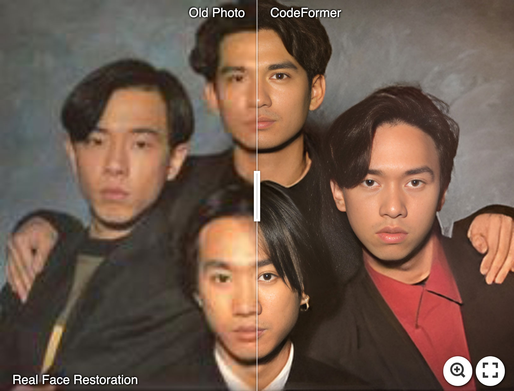

CodeFormer 全链路盘点：从模型原理到生产部署，人脸修复能覆盖多少场景
CodeFormer 是开源人脸修复领域的标杆项目，本文从调参体系、批量处理、API 部署到工程排查，系统性梳理它覆盖的完整能力面，以及各类场景下的选型建议。
为什么一个人脸修复模型值得做深度盘点
过去两三年，AI 人脸修复从"玩具级"快速进入"生产级"，CodeFormer 是这轮浪潮里绕不开的名字。它既不是最早的方案，也不是指标最极致的模型，但在"开源可用 + 效果稳定 + 生态完整"这三个维度的平衡上，CodeFormer 至今仍然是很多人的首选起点，它的官网上维护着模型代码和预训练权重的最新版本。
它的有意思之处在于：CodeFormer 不是一个单一功能工具，而是一整条链路的入口。从"拿一张模糊老照片修清楚"这种最简单的个人使用，到"把修复能力做成 API 挂在 SaaS 产品里"这种生产集成，CodeFormer 的能力面横跨至少四个层级。大多数用户只用过其中一层，但真正理解了这整条链路，才能判断它到底适不适合自己的场景。从官方下载拿到推理脚本和预训练权重，本地装一下 PyTorch 环境就能跑起来。
调参体系：w 值背后的平衡艺术
CodeFormer 区别于早期 GAN 修复模型的核心，是它在模型结构里加了一条残差连接，用一个标量 w 来控制"AI 理想脸"和"原图真实脸"之间的融合比例。这个设计简单到一个数字，背后却藏着它所有的调参逻辑。
模型的推理过程可以理解为两条信息流：一条是 Transformer 从 Codebook 里找出最匹配当前低清脸的视觉原子组合，画出一张"统计意义上最像真的人脸"；另一条是把原图本身编码后的特征直接送到解码器。w 值就是第二条路径的流量开关。w 越小，解码器越依赖 Codebook 的重建结果——画面干净、皮肤光滑、五官对称，但原图的独特特征（痣、小疤痕、不对称的眼型）可能被洗掉。w 越大，解码器越倾向融合原图特征——身份保真度高，但原图里的噪点、模糊、压缩伪影也会被一起放大。

这条设计最妙的地方是 w 的变化是线性的。它不是几个离散档位，而是从 0 到 1 的连续插值——w=0.65 就是 65% 原图特征加 35% Codebook 重建。这让调参变得可预测、可量化。根据样本文档里归纳的场景化选值经验，长辈老照片通常选 w=0.6~0.8（像本人优先），AI 生图崩坏后处理选 w=0.2~0.4（好看优先），视频逐帧处理固定 w=1.0（保证前后帧身份一致）。
不过这套调参体系也有明显局限。w 是整张脸的全局值，你不能指定"眼睛区域用 w=0.8、皮肤区域用 w=0.3"——如果需要局部差异化处理，要么分区域分别跑，要么用 mask 工具配合。另外，Codebook 对头发的建模能力较弱，头发部位对 w 值基本不敏感，大 w 和小 w 的结果差异不大。
批量处理：从单张修图到几百张相册
单张测试和批量处理是完全不同的事。CodeFormer 内置了递归遍历逻辑，--input_path 接受文件夹路径后，会自动递归处理所有子目录里的 jpg、jpeg、png、bmp 文件。这对于"把爸妈的旧相册全扫一遍修了"这种需求来说，一行命令就能启动：
python inference_codeformer.py -w 0.7 \
--bg_upsampler realesrgan --face_upsample \
--input_path D:/old_photos/ \
--output_path D:/restored/但批处理真正的挑战不只是"能跑"，而是"跑得完、跑得稳"。样本文档里给了几个实用的提速技巧：如果背景不是重点，关掉 --bg_upsampler 能省 30% 时间；如果输入是原始相册，可以先批量裁脸对齐再用 --has_aligned 模式跳过检测阶段，省掉一半时间；多 GPU 机器可以用 split 工具把文件夹分几份，每个 GPU 开一个进程并行跑。更完整的参数说明和批量脚本模板在codeformer文档里有现成的整理。
批量处理的容错设计值得单独提一句。脚本遇到坏图或无脸图不会中断，只会打印 warning 然后继续——对于大型相册来说这很重要，你不用盯着终端等一张坏图卡死整个批次。但它的短板也很明确：不支持断点续跑，中断后要从头开始。所以实战里建议大批量拆成 100 张一批，或者写一个 wrapper 脚本记录已处理的文件列表，中断后可以跳过已完成的部分。
API 化部署：从本地命令到云端服务
本地跑 CodeFormer 适合个人和小批量场景，但如果要在网站后端、移动 App 或 SaaS 产品里集成修复能力，就需要把模型部署成网络 API。CodeFormer 的生态里有三个主流的 API 服务平台：Replicate（官方维护）、Fal.ai 和 Sieve（非官方）。
根据样本文档的实测对比，Replicate 参数完整（w、对齐、背景、上采样全部可调），价格大约每张 0.003 美元，支持图片和视频两种输入。Fal.ai 稍便宜一些但参数不完整，Sieve 的特点是速度快。对于日均调用量不大的场景（比如一个小网站每天几十上百次修复请求），直接用 Replicate 的按量计费就够了，不需要自己搭服务器。
但到了日均调用上万次的量级，自建方案的成本优势就会显现。Replicate 提供专用端点（Dedicated Endpoint），按小时计费 GPU；也可以自己搭一个 FastAPI + Docker 服务，部署到 AutoDL 或 Lambda Labs 等云 GPU 平台。样本文档里给了一个估算：10000 张图片每月，Replicate 按量约 30 美元，自建 T4 专用端点约 430 美元，自建 RTX 3090 云服务约 800 元人民币。成本权衡之外还有一个关键因素：数据隐私。用第三方 API 意味着图片会上传到对方服务器，处理完后保留一段时间；自建服务则完全可控，适合处理敏感照片。
工程链路：CUDA 排查和环境踩坑
开源深度学习项目绕不开环境问题，CodeFormer 最常见的报错不是模型本身，而是 CUDA 链路断裂。样本文档里归纳了一个四步排查流程：先跑 nvidia-smi 确认驱动是否正常，再用 PyTorch API 检查 CUDA 是否可见，然后核对 PyTorch 编译时的 CUDA 版本是否 ≤ nvidia-smi 显示的驱动支持版本，最后排查 conda 环境是否正确激活。
绝大多数 CUDA 错误的根因是 PyTorch 版本和 NVIDIA 驱动不匹配。很多旧教程说"装完驱动还要装 CUDA Toolkit"，但现代 PyTorch 的 pip 包已经自带了 CUDA runtime，只要驱动版本够就行——这条经验能省掉很多无用功。
客观看看它的局限
说了这么多优点，CodeFormer 也有几个绕不开的短板。首先是 w 值的全局化设计，不能区域差异化调参，对想精细化处理复杂人脸的用户来说是个遗憾。其次是批量处理没有内置断点续跑机制，大批量跑之前最好先验证几张确认 w 值选对了，避免白跑。最后，CodeFormer 的能力上限受限于原图信息——如果某个区域完全糊成了像素块，w=1 也只能保留"糊的像素块"，它不会凭空变出眼球纹理或头发细节。
什么样的人该用它
第一类是老照片修复爱好者。如果你想把家里长辈几十年前的黑白或彩色旧照片修清楚、放大、上色，CodeFormer 是目前最合适的开源起点——调参逻辑清晰，批量能力够用，网上能找到大量社区分享的 w 值经验。
第二类是想在产品里集成人脸修复的 AI 开发者。不管是做在线修复网站、给 SaaS 产品加个修复功能，还是在移动 App 里嵌一个修脸模块，CodeFormer 完整的 API 生态让这件事的起步成本很低——Replicate 的按量计费方案甚至不需要你自己写一行部署代码。
第三类是视频工作者。视频逐帧处理对身份一致性要求极高，CodeFormer 在 w=1 模式下能最大化保留原图特征，加上多 GPU 并行能力，处理几十分钟的短视频不是问题。视频场景还有一个额外好处：CodeFormer 对脸部区域敏感，背景可以关掉增强来提速。
这套资料在三个仓库都能拿到——GitHub维护着模型代码和预训练权重，Gitee国内镜像方便直接拉取，GitCode上有社区整理的常用脚本和批量模板，各自更新节奏略有不同但核心内容一致。